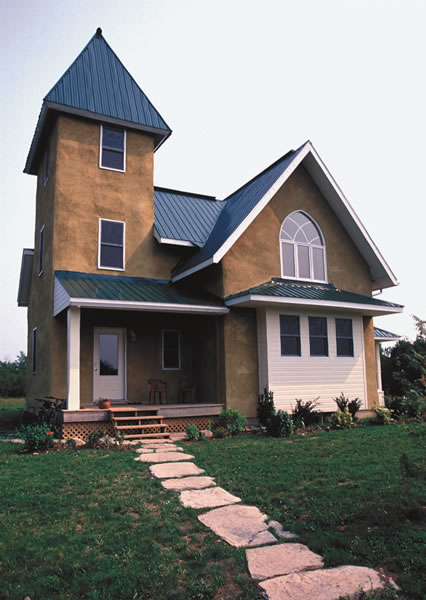
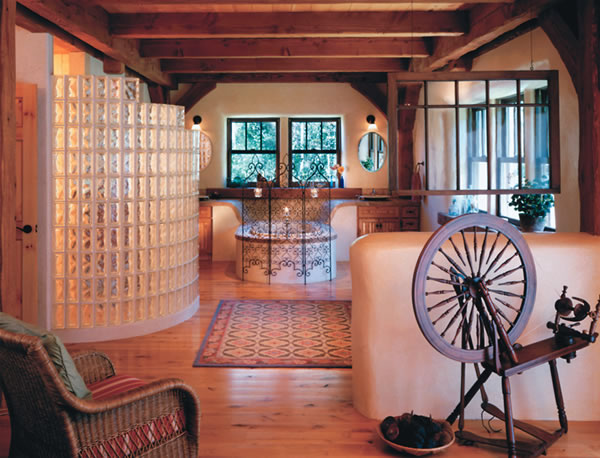

Houses made from straw bales are attractive, affordable, energy efficient, environmentally friendly and can be designed to match the owners personal needs, aesthetics and budget. These homes are made by stacking rectangular bales of straw and covering them with a plaster shell. Straw bale walls are at least twice as energy efficient as those from conventional stick-frame construction and will save you money on heating and cooling bills. Such savings are among many reasons why straw bale building is no longer a fringe idea, but one that has spread throughout North America and the rest of the world. Other attractions include its adaptability, hands-on building satisfaction and the cozy atmosphere created inside these homes.
With this recent surge in popularity, the collective knowledge built from the successes and mistakes in this grass-roots movement has helped the technique evolve we now know much more about what works and what doesnt. So before you decide if straw bales are right for your dream home, heres expert insight into common questions about fire resistance, moisture, pests, building costs, mortgages, insurance and resale value.
Fire Resistance
Straw bale walls are naturally fire resistant. While loose, dry straw is combustible, but when it is compacted into bales, theres not enough air for the straw to burn well. For a good analogy, compare the combustibility of a single sheet of newsprint to that of an entire telephone directory. A single sheet will burn quickly, but a phone book will just smolder. Combining plaster with the compactness of a bale wall enhances fire resistance. The plaster coating effectively seals the already fire-resistant bales inside a noncombustible casing. According to fire safety tests conducted by the National Research Council of Canada, bale walls withstood temperatures up to 1,850 degrees for two hours.
Moisture
Regardless of which materials you use to build your house, moisture is an enemy, and this topic is hotly debated among bale builders. When built correctly, straw bale homes dont pose any greater moisture risk than conven- tional buildings. According to the 2000 Strawbale Moisture Monitoring Report, submitted to the Canada Mortgage and Housing Corp., straw bale walls do not exhibit any unique propensity for moisture retention.
The main source of potential moisture problems is liquid penetrating into the wall cavity. This can happen in many ways such as windblown rain, drifting snow, splash-back from a dripping roof, plumbing leaks, floods, holes and breaches of the walls protective layers in leaky roofs and window sills. Many simple, effective building techniques are used to protect bales from exposure to moisture. Generous roof overhangs and proper eave troughs will eliminate most direct rainfall and splash-back from reaching the walls. A bale wall that is raised on a wooden curb on the foundation or floor will ensure that any spills or floods inside the house will not soak into the walls. Plastic or tar paper placed along the top of walls will protect against any water that may come through your roof. Windows and doors also can be installed with proper flashing and drip edges that shed water away from the walls.
The other way moisture can damage a building is vapor migration through walls. Think about blowing up a balloon. You force warm, moist air from your lungs into the balloon, creating an air-tight container with a higher pressure than what exists outside the balloon. The moist air will do its best to leave the balloon and join the surrounding atmosphere. During the heating season, your house functions similarly to the balloon: When heat is added to your living space, your relatively airtight house is filled with warm, moisture-laden air. Extra moisture is added by breathing, cooking, bathing, etc., and that air will naturally search for a way out of the house and into the cold, dry air outside.
As the warm, moist air tries to travel outdoors, it will begin to cool. As it cools, the water vapor it carries will condense back to liquid. If liquid is deposited in your walls and allowed to remain there without drying, it will reduce the efficiency of your insulation and eventually lead to mold and rot. In hot climates, the process can happen in reverse, especially if you use air conditioning.
The plaster coating on straw bale walls is an effective barrier against moist air leakage. If properly tied in with conventional polyethylene vapor barriers installed in the ceiling and under the floor, a bale house can be made almost airtight. In conventional building practice, moisture is prevented from migrating into the wall cavity through the use of plastic vapor barriers in the walls. This addresses the real concern of air leakage in stud-framed homes, but it is unnecessary in bale walls.
Pests
We share this planet with billions of creatures both large and small. To say that a particular house or style of construction is pest-proof is to ignore the instinct and persistence of our little neighbors.
The ideal homes for pests offer openings, nests and food. Plastered bale walls do not offer any of these three because their coating seals the bales from foundation to roof with a difficult-to-chew barrier. Should a gap be left open in the plaster, the bales themselves are too densely packed to make comfortable housing for mice and other rodents. All those comfy spaces in your neighbors frame walls, lightly packed with batt insulation, make a much more inviting home for pests.
Not much food is available for any living creature in a straw bale wall even termites dislike straw. However, an inordinate amount of seed in the straw could provide a source of food, which is why you should check your bales for excess seed content before purchasing them. But make sure as with any style of construction to keep pests out during the building process.
Building Costs
Most contractors estimate the cost of a wall system will be 10 percent to 15 percent of the total budget. Because of this, your straw bales (as a building material) are going to directly affect only that percentage of the total cost. That said, straw bale buildings can offer a small cost advantage over conventional homes, mostly in the form of less expensive building materials and sweat equity. By replacing both wall-framing lumber and insulation plus plastic vapor barriers, nails, glues and more with straw (a single inexpensive material), you can lower material costs. The interior and exterior plaster cladding, depending on the choice of ingredients and application method, can be comparable in price to that of other cladding systems such as drywall, brick, vinyl or wood siding.
You also might save money on framing labor. Because bales are more user-friendly than other wall systems, many people save on labor costs by doing the work themselves. The cost of hiring labor for frame homes and bale homes is about the same, so the amount you will save depends on how much sweat equity you put into the house.
Most people combine hired help with their own labor and that of volunteers family, friends and neighbors. (For help locating green building experts, potential work-party volunteers and other straw bale buildings in your area, check out our free Green Homes and Renewable Energy Directory, at www.MotherEarth News.com/greenhomes.Mother)
Remember that if you build the house yourself, you will have to make a significant time commitment. While you may not be paying for labor, you may be losing earnings from missed time at your job. You should mix and match your talents and interests with those of local professionals to find a good balance between your budget, time and level of expertise.
With the exception of the exterior, other construction costs for a straw bale house can be identical to those of any other building style. You can buy cheap materials to save money on other aspects of your house, such as the foundation, roof, windows, mechanical systems and interior finishings, but make sure you weigh the initial savings against long-term benefits. More money spent upfront on better building materials can lead to energy savings and less maintenance expenses in the long run.
Mortgages, Insurance and Resale value
Perhaps the most difficult part of building with straw (or any other alternative building material) is presenting your project to the various institutions that must be involved. Lenders and insurers are conservative and averse to risks, and any construction method that is perceived as new or experimental can seem like a risk theyd rather avoid.
Sufficient evidence exists to convince lenders and insurers that your proposed straw bale house will be a safe prospect, but you will have to educate them. The U.S. Department of Energy has published positive findings about straw bale construction (go to www.eere.energy.gov and search for straw bale). The Canada Mortgage and Housing Corp. (www. cmhc-schl.gc.ca), which helps set many of the standards used by lending institutions in Canada, is supportive of straw bale construction, and its data can help you when negotiating for a loan.
Potential lenders also must have confidence in your financial situation. You can make a compelling case for a straw bale home project by bringing the lender a good set of professionally drawn building plans and a realistic budget and timeline. Ensure your budget contains guaranteed quotes for materials and services youll require. If you are a first-time builder, you may need to hire professional consultants to prove to the bank that good help is available should problems arise. If you are hiring a general contractor to build your home, he or she will have to fill out paperwork for the bank, too. Hiring someone with a good local reputation will help.
It takes thoughtful preparation and patience to explain straw bale construction to a lender. Before they secured funding, many bale builders had to approach numerous lending institutions to find the right combination of personality and corporate culture. Dont let a rejection deter you. If you truly are a good risk, you will eventually find the money.
As the number of straw bale homes continues to increase, it becomes more likely that a financial institution in your area has already approved funds for one. Do some research into existing bale homes near you to find out if their builders received loans.
Insurance companies are concerned with facts and figures that indicate levels of risk. The existing research for straw bale homes scores positively with most insurers, especially the excellent fire ratings. Many insurance companies already have these test results on file; others will consider the ratings and results if you submit them with your application.
Building code approval is usually the only structural requirement of insurers, so with a permit and fire test ratings, you can usually obtain insurance. Some straw bale homes have been insured at rates lower than similarly sized conventional homes. However, it may take determination to find the right insurer. Your role as educator, builder, well-informed client and confident planner cannot be underestimated.
In current real estate markets, chances are good that a straw bale home will receive a lower resale value estimate than a stick-frame equivalent. However, low appraisals do not necessarily guarantee low resale prices. Those looking for a strong, unique and superinsulated house may decide that the attractions of straw bale are worth more to them than the homes appraisal indicates. (As a side benefit, lower appraisals often mean lower property taxes.)
If you decide that a straw bale home is what you want, plunge in and do it. You will open doors to a new and lively community that will spring up around your efforts. Friends you didnt know you had will emerge to help, and connections will be fostered with other like-minded people.
|
ALL PHOTOS COURTESY NEW SOCIETY PUBLISHERS; LAURA TAYLOR Routt County, Colo. |
CATHERINE WANEK Steamboat Springs, Colo. |
JAN COHEN The traditional “truth” window reveals a straw bale, providing evidence of the home’s building material. |
|
CATHERINE WANEK Lines of this Ontario straw bale home echo the churches and schools of the area’s early settlers. |
 DAVID PATTERSON PHOTOGRAPHY In this straw bale home, a half-wall has been creatively placed to provide divisions of space without spoiling the room’s spaciousness. |
 LAURA TAYLOR Thick, rounded straw bale walls provide ample space for wide window sills on which to grow plants or sit and enjoy the view. Log timbers in the ceiling act as floor joists for the second story of this home. |
|
LILKER HECHT DESIGN STUDIO WITH STONES THROW DESIGN The walls of this unique passive solar home, located outside of Huntsville, Ontario, are made with straw bales, demonstrating one of the many ways bales can be incorporated into home design. |
|
|